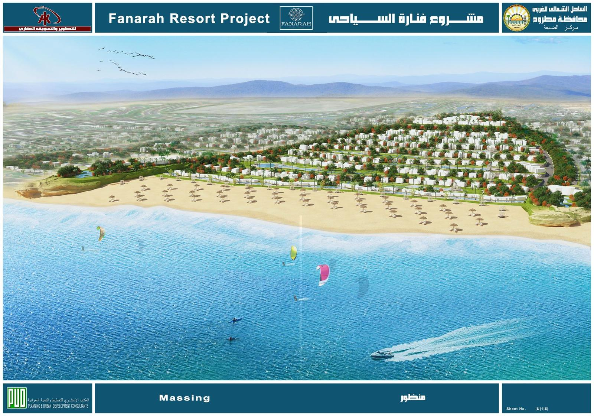

Fanarah Tourist Resort
Master plan · Jefeira, North Coast, Egypt
Master plan for a 5.5 km2 tourist resort at Jefeira on Egypt's North Coast, for AK for Real Estate Investment.
Partners
PUD
Client
AK for Real Estate Investment
More from North Coast
 Marina El AlameinNorth Coast · 1985-19972011Regional Vision for the North Coast and Tourism Development Master Plan for Fuka-MatrouhFuka-Matrouh sub-region, North Coast · 20111994Marina Matrouh Tourist CentreMarsa Matrouh, North Coast · 1994-2004
Marina El AlameinNorth Coast · 1985-19972011Regional Vision for the North Coast and Tourism Development Master Plan for Fuka-MatrouhFuka-Matrouh sub-region, North Coast · 20111994Marina Matrouh Tourist CentreMarsa Matrouh, North Coast · 1994-2004 Pyramids Plateau Destination Master PlanGiza · 2024-20252020Golden GateNew Cairo · 2020-2021
Pyramids Plateau Destination Master PlanGiza · 2024-20252020Golden GateNew Cairo · 2020-2021 Cairo Media CityGiza · 2026
Cairo Media CityGiza · 2026